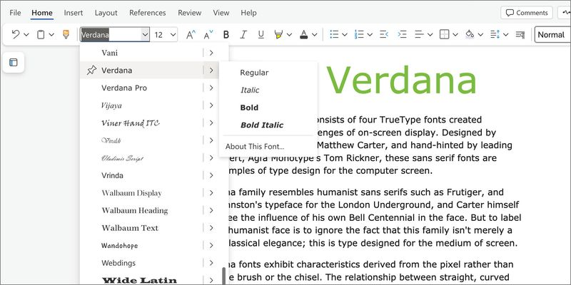

July 8th 1996, by Matthew Carter
Created for a Purpose
Verdana was created to be a typeface for the web whereas many of the typefaces to exist at the time were made for print media. This typeface was created to just as readable small as it is large and normal as it is bold. The type was designed with simple curves and large open letter forms. This created a typeface that didn’t vary in appearance with the changing of boding, space, or size. There are even some letters that are designed to never touch so that the letterforms don’t become muddled. This typeface introduced the idea of universal type on the web that was easy to read while being professional and simple.
